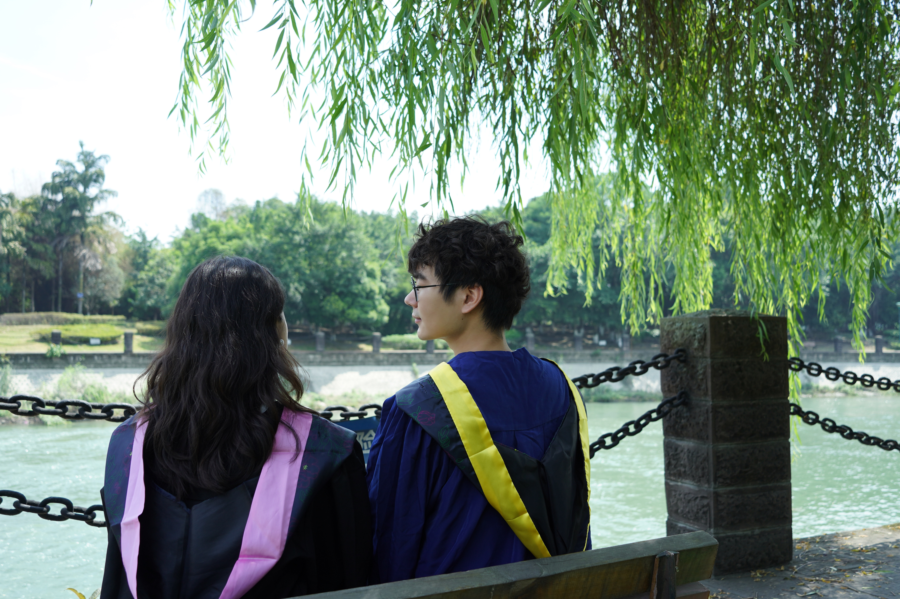

Hai Jiang (江海)
First-year Ph.D. Student |
 |
 [
[ [
[ [
[Biography
I am currently a Ph.D. student in the School of Aeronautics and Astronautics, Sichuan University (SCU), supervised by Prof. Songchen Han. I obtained my B.E. and M.S. degrees from Sichuan University in 2020 and 2023, respectively.
From Jan. 2022 to the present, I have been working as a research intern at Megvii Technology (Megvii Research Chengdu), supervised by Prof. Shuaicheng Liu, Dr. Yuhang Lu, Dr. Ao Luo, and Haipeng Li. My research interests include image restoration and image alignment, especially low-light image enhancement and homography estimation.
News
[07/2024] One paper accepted to ECCV 2024
[08/2023] One paper accepted to SIGGRAPH Asia 2023
[07/2023] One paper accepted to ICCV 2023
Selected Publications
-
LightenDiffusion: Unsupervised Low-Light Image Enhancement with Latent-Retinex Diffusion Models
Hai Jiang, Ao Luo, Xiaohong Liu, Songchen Han, Shuaicheng Liu
European Conference on Computer Vision (ECCV), 2024. [PDF] [Code] -
DMHomo: Learning Homography with Diffusion Models
Haipeng Li, Hai Jiang, Ao Luo, Ping Tan, Haoqiang Fan, Bing Zeng, Shuaicheng Liu
ACM Transactions on Graphics (ToG, Presented at SIGGRAPH), 2024. [PDF] [Code] -
Revisiting Coarse-to-fine Strategy for Low-Light Image Enhancement with Deep Decomposition Guided Training
Hai Jiang, Yang Ren, Songchen Han
Computer Vision and Image Understanding (CVIU), 2024. [PDF] [Code] -
Low-Light Image Enhancement with Wavelet-based Diffusion Models
Hai Jiang, Ao Luo, Songchen Han, Haoqiang Fan, Shuaicheng Liu
ACM Transactions on Graphics (ToG, Proceedings of SIGGRAPH Asia), 2023. [PDF] [Code] Supervised Homography Learning with Realistic Dataset Generation
Hai Jiang*, Haipeng Li*, Songchen Han, Haoqiang Fan, Bing Zeng, Shuaicheng Liu
International Conference on Computer Vision (ICCV), 2023. [PDF] [Code]Semi-supervised Deep Large-Baseline Homography Estimation with Progressive Equivalence Constraint
Hai Jiang*, Haipeng Li*, Yuhang Lu, Songchen Han, Shuaicheng Liu
Thirty-Seventh AAAI Conference on Artificial Intelligence (AAAI), 2023. [PDF] [Code]Unsupervised Global and Local Homography Estimation with Motion Basis Learning
Shuaicheng Liu, Yuhang Lu, Hai Jiang, Nianjin Ye, Chuang Wang, Bing Zeng
IEEE Transactions on Pattern Analysis and Machine Intelligence (TPAMI), 2023. [PDF] [Code]R2RNet: Low-light Image Enhancement via Real-low to Real-normal Network
Hai Jiang, Xuan Zhu, Yang Ren, Yutong Hao, Fengzhu Zou, Lin Fang, Songchen Han
Journal of Visual Communication and Image Representation (JVCIR), 2023. [PDF] [Code]
Awards
- Distinguished Master's Thesis of Sichuan University
- Third Prize of Undergraduate Graduation Design (Thesis) of Sichuan University
Academic Services
- Journal reviewer:
International Journal of Computer Vision (IJCV), IEEE Transactions on Image Processing (TIP), IEEE Transactions on Circuits and Systems for Video Technology (TCSVT), IEEE Signal Processing Letters (SPL), Computer Vision and Image Understanding (CVIU), Computers & Graphics (CG)
ACM SIGGRAPH Annual Conference (SIGGRAPH), ACM International Conference on Multimedia (ACM MM), IEEE Conference on Computer Vision and Pattern Recognition (CVPR), European Conference on Computer Vision (ECCV), IEEE/RSJ International Conference on Intelligent Robots and Systems (IROS), IEEE International Conference on Multimedia and Expo (ICME)
Conference Reviewer: